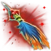
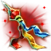
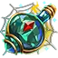
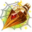

套装库
60 项原版套装定义，逐项关联全部部件、核心天赋与公共效果。配装时同时比较格位、点亮顺序和完成整套的机会成本。
套装内的属性收益与完成条件分开阅读。查看同层、同品质天赋的数值取舍
战斗陶醉
5 个关联部件 · 0 组公共说明
生命光辉
5 个关联部件 · 0 组公共说明
仪式灭绝


6 个关联部件 · 0 组公共说明
爆破狂热
5 个关联部件 · 0 组公共说明
决心冲动
5 个关联部件 · 0 组公共说明
致命触碰
6 个关联部件 · 0 组公共说明
烈焰守卫
5 个关联部件 · 0 组公共说明
恐惧诅咒
5 个关联部件 · 0 组公共说明
龙之路
5 个关联部件 · 1 组公共说明
稳固防御
4 个关联部件 · 1 组公共说明
坚定凯旋
4 个关联部件 · 0 组公共说明
灾厄激情
5 个关联部件 · 0 组公共说明
盲眼预言者
4 个关联部件 · 1 组公共说明
无畏旅者
6 个关联部件 · 0 组公共说明
魅惑丰饶
7 个关联部件 · 0 组公共说明
传承护符
6 个关联部件 · 0 组公共说明
剧毒之握


6 个关联部件 · 0 组公共说明
鼓舞颂歌
7 个关联部件 · 0 组公共说明
命运呐喊
6 个关联部件 · 0 组公共说明
爆炸幻象
6 个关联部件 · 0 组公共说明
诡诈火焰
6 个关联部件 · 0 组公共说明
绝对优势
6 个关联部件 · 2 组公共说明
森林象征
6 个关联部件 · 0 组公共说明
远古秘密
4 个关联部件 · 1 组公共说明
治疗之柱
4 个关联部件 · 1 组公共说明
绝境时刻
4 个关联部件 · 1 组公共说明
捍卫者报偿
4 个关联部件 · 1 组公共说明
毁灭者之力
4 个关联部件 · 1 组公共说明
堡垒突袭
4 个关联部件 · 1 组公共说明
刽子手之梦
7 个关联部件 · 0 组公共说明
良机
8 个关联部件 · 0 组公共说明
速度马蹄铁
7 个关联部件 · 1 组公共说明
耀眼荣光
6 个关联部件 · 1 组公共说明
海盗冒险
6 个关联部件 · 1 组公共说明
收藏家习性
5 个关联部件 · 1 组公共说明
珍藏心愿
6 个关联部件 · 1 组公共说明
炼金大师
7 个关联部件 · 1 组公共说明
英雄宁静
6 个关联部件 · 1 组公共说明
远古符文
6 个关联部件 · 1 组公共说明
似曾相识
8 个关联部件 · 1 组公共说明
诅咒封印
6 个关联部件 · 1 组公共说明
占星者之怒
4 个关联部件 · 1 组公共说明
密林囚笼
4 个关联部件 · 1 组公共说明
自然赠礼
4 个关联部件 · 1 组公共说明
守护护符
3 个关联部件 · 1 组公共说明
鹰隼目光
4 个关联部件 · 1 组公共说明
乌鸦帷幕
4 个关联部件 · 1 组公共说明
生命毁灭者
4 个关联部件 · 1 组公共说明
元素驯服者
4 个关联部件 · 1 组公共说明
梦境守护者
4 个关联部件 · 1 组公共说明
召唤师魔典
4 个关联部件 · 1 组公共说明
英雄解放者
4 个关联部件 · 1 组公共说明
必然预言者
4 个关联部件 · 1 组公共说明
金字塔之谜
5 个关联部件 · 0 组公共说明
不朽之秘
4 个关联部件 · 1 组公共说明
牧首意志
4 个关联部件 · 1 组公共说明
衰竭触碰
3 个关联部件 · 1 组公共说明
夜间猎手
5 个关联部件 · 1 组公共说明
本质映像
3 个关联部件 · 1 组公共说明
黑暗讯息
3 个关联部件 · 1 组公共说明